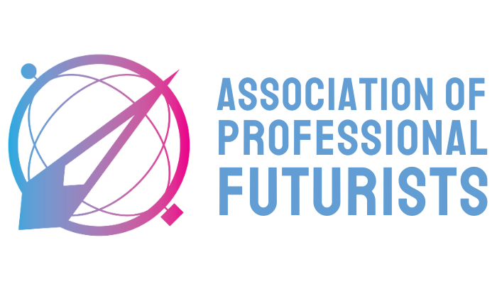
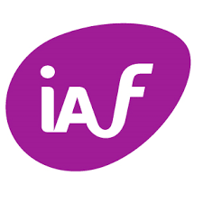

Ajut liderii să construiască AI agency, claritatea de a vedea prin zgomot și încrederea de a acționa.
Ajut echipele non-tehnice să treacă de la simpla utilizare a instrumentelor AI la AI agency, adică la discernământ însoțit de capacitatea de a lua acțiuni strategice.

Cum lucrez
Începem cu o conversație.
Fiecare colaborare începe cu înțelegerea situației tale actuale și a blocajelor cu care te confrunți.

Construim împreună
Fie că ai nevoie de claritate strategică la nivel de conducere sau de competențe AI concrete în echipe.
Framework-uri testate
Instrumente proprii testate în 800+ ore de workshop cu peste 5.000 de profesioniști.
Produse și servicii
Colaborări dedicate, concepute pentru schimbare organizațională durabilă.
AI Strategy Session
O sesiune intensivă pentru echipele de conducere care au nevoie de claritate cu privire la implementările AI: de unde să înceapă, ce să prioritizeze, ce să evite.
AI Fluency for Business
Training AI practic, configurat pe industria, rolurile și workflow-urile tale reale. Participanții pleacă cu sarcini reale rezolvate.
Foresight & Futures Workshop
Un workshop structurat pentru echipele de conducere care vor să gândească dincolo de trimestrul următor. Mapăm ce urmează, testăm presupunerile, aliniem direcția.
Strategic Retainer
Un parteneriat strategic continuu pentru companiile care vor un consultant de AI și foresight care le cunoaște organizația.
Fiecare produs începe de la cum va arăta industria ta în 3 ani și ce trebuie să faci azi ca să fii pregătit. Toate sunt configurate pentru contextul, industria și dimensiunea echipei tale. Hai să vorbim despre ce ar fi potrivit pentru tine.
Hai să vorbimFramework-uri și resurse
Instrumente gratuite pentru lideri și echipe care navighează tranziția AI.
State of AI în România
Cercetare academică despre cum interacționează forța de muncă din România cu AI. Date pentru decidenți.
Deschide PDFM.O.D.E.L. Framework
Un protocol profesional pentru trecerea de la prompting de bază la generare structurată de output AI de înaltă valoare.
Deschide PDF4D Framework
Un framework de decizie pentru lucrul cu AI: ce să delegi, cum să descrii, cum să evaluezi output-urile, cum să menții calitatea.
Deschide PDFAI Fluency Blueprint
Un plan de acțiuni în 26 de puncte pentru a ajunge la AI fluency organizațional.
Deschide PDFThe AI Evolution Arc
Un roadmap de la rezistență digitală la transformare strategică, 4 niveluri de AI fluency pentru profesioniști și echipe.
Deschide PDFAI Reality Check Canvas
Un instrument de dialog pentru echipe: evaluarea beneficiilor, riscurilor și necunoscutelor în cazurile de utilizare AI.
Deschide PDFF.O.R.C.E. Matrix
Un framework de delegare pentru era agenților AI pentru a trece dincolo de generarea de text, către raționament complex și execuție autonomă.
În curândCe spun participanții
În cifre
Certificări

Association of Professional Futurists Certified Agile Leadership
Certified Agile Leadership

International Association of Facilitators